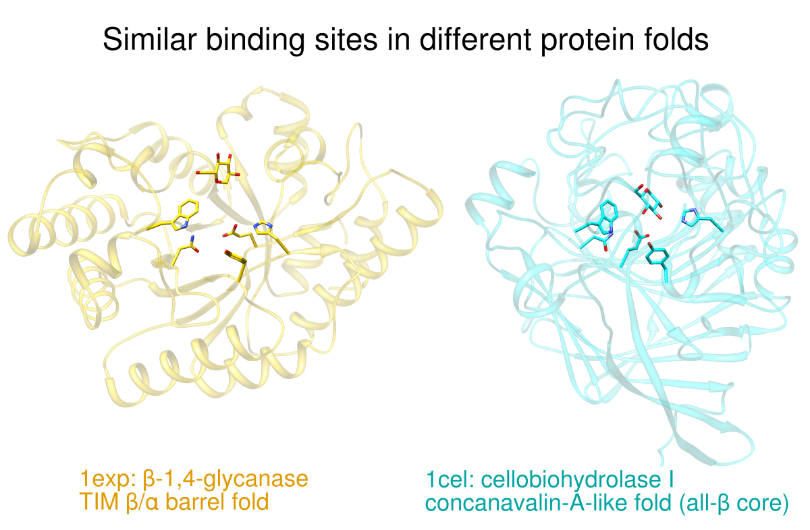
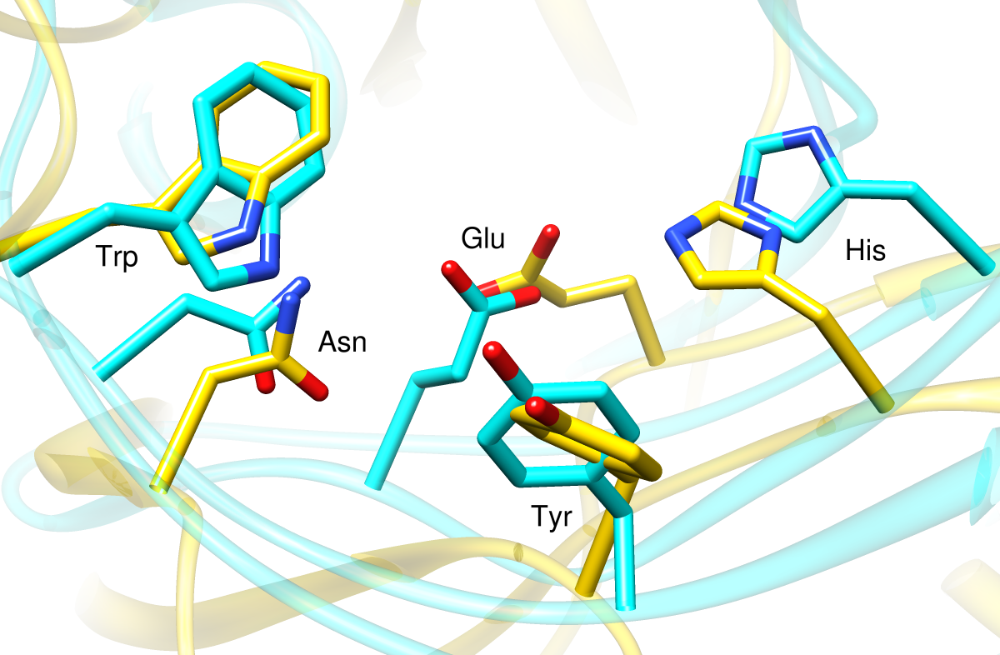
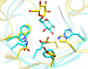

| A: |  | ||||||||||||||
| B: |  | ||||||||||||||
| C: |  | Residues: |
|
||||||||||||
β-1,4-glycanase (gold, Protein Data Bank entry 1exp) and cellobiohydrolase I (cyan, Protein Data Bank entry 1cel) have different folds but a similar pattern of amino acids near a glucose residue. This possible example of convergent evolution was identifed in Table 5 of:
Detection of protein three-dimensional side-chain patterns: new examples of convergent evolution. Russell RB. J Mol Biol. 1998 Jun 26;279(5):1211-27.
The recipe here is just an example; there are usually many routes to the same or similar results. Not all of the steps can be done with commands – for example, there is no substitute for interactively finding the best views – but commands for much of the setup below are collected into the Chimera command file convergent.com.
See also: presets, tips on preparing images
The images show (A) the two proteins side by side, (B) a closeup of the superimposed sites without glucose, and (C) a thumbnail of the superimposed sites. Often it is best to create a set of views that, while different, are consistent or related to each other by only simple transformations. We will generate the view shown in B first and then base the others upon it.
Start Chimera and enlarge the window as desired. Show the Command Line (for example, with Favorites... Command Line). Fetch 1exp and then 1cel from the Protein Data Bank:
Command: open 1expMove and scale the structures using the mouse and the Side View as you wish throughout the tutorial.
Command: open 1cel
Command: focus
1cel includes two copies of the protein, chains A and B; one copy can be deleted:
Command: delete :.bUse the ribbons preset, and for now, hide all atoms and bonds:
Command: focus
Command: preset apply int 1Set up the basic coloring scheme and white background:
Command: ~disp
Command: color gold #0Display the residues identified by Russell and use them to superimpose the structures:
Command: color cyan #1
Command: set bg_color white
Command: alias site1 #0:84,126,233,171,205The aliases in the above match command specify entire residues. The match command requires equal numbers of atoms from the two structures, specified in the same order. In this case, the residues are of the same types (thus containing the same numbers of atoms) and the atoms of each residue will be in the same order because they are automatically sorted by name.
Command: alias site2 #1:367,141,217,145,228
Command: alias both site1 | site2
Command: disp both
Command: match iterate 2.0 site2 site1
Command: focus both
Command: color byhet
The displayed sidechains are somewhat obscured by other parts of the proteins. Rotate, translate, and scale the structures, and in the Side View, adjust the front and back clipping planes to simplify the view. You may also want to adjust the window dimensions. After generating a good view of the set of displayed residues, save the position:
Command: savepos closeupIt does not have to be perfect; the same command can be used again later to re-save the position after further adjustments. You may also wish to save the session (see the File menu) at this stage and whenever you are pleased with your previous work and want to ensure it will not be lost.
Make the sticks and ribbons smoother by increasing subdivision quality:
Command: set subdivision 10
Make everything shinier: open the Shininess dialog (under Tools... Viewing Controls) and move the shininess and brightness sliders to the far right. Close the dialog or click the tab to go to the Side View.
The display is still quite "busy," in part because the two proteins have different folds. We will de-emphasize the ribbons by making them transparent and slimmer.
Create transparent versions of gold and cyan and use them to color the ribbons:
Command: colordef tgold 1 .843 0 .2The colordef command takes a name for the new color, followed by red, green, blue, and opacity (RGBA) values, each in the range of 0.0 to 1.0 (transparency = 1 – opacity). RGB values for the existing colors gold and cyan were looked up by entering their names into the Color Editor (under Tools... Utilities). With colordef, different opacities were tried along with these RGB values until the desired level of transparency was achieved.
Command: colordef tcyan 0 1 1 .15
Command: color tgold,r #0
Command: color tcyan,r #1
Start Ribbon Style Editor (under Tools... Depiction) and adjust the Ribbon Scaling values:
| 2° Structure | Width | Height |
|---|---|---|
| Turn | 0.20 | 0.20 |
| Helix | 0.60 | 0.20 |
| Sheet | 0.60 | 0.20 |
| Arrow (base) | 1.0 | 0.20 |
| Arrow (tip) | 0.20 | 0.20 |
Command: ribscale slim
The position for figure B, closeup, was saved above. If you have since improved it, be sure to save it again. Next, generate and save positions for the other two figures. The intent is to preserve the orientations in the closeup position while possibly translating up/down and left/right and changing the scale.
Display the glucose residues, both named BGC (Note: older versions of these PDB entries used the name GLC instead):Command: disp :bgcIf you have changed the view from the closeup position, restore it:Command: reset closeupScale and translate everything (avoiding rotation) so that the glucose molecules are visible, optionally adjust the clipping planes in the Side View, and then save another position:Command: savepos closeup2Scaling can be done with the mouse, or with the command scale, or by moving the small square in the Side View. Translations (up/down, left/right) can be performed with the mouse or with the command move. If you make a mistake, you can simply revert to the closeup position and start over.
Again we wish to leave the orientation of the structures the same as in the closeup position, but separate them and zoom out so that all parts are visible. Restore the closeup position:Command: reset closeupZoom out (scale down) and turn off clipping by unchecking the Clip option in the Side View. Scale and vertically translate the structures as needed to leave room for a title at the top and other text at the bottom. The proteins are still superimposed, in the middle of the window. Translate one structure to the left and the other to the right:Command: move x -25 models #0The exact translation distances needed will differ according to your starting position. When a satisfactory side-by-side view has been achieved, save the position:
Command: move x 30 models #1Command: savepos sidebyside
Use 2D Labels (under Tools... Utilities) to add a title and other text.
Command: reset closeupand then use 2D Labels to label the residues. Click to start a label and type to enter its contents. Click the color well to set label color, in this case black. The appropriate font size depends on the size of the window; use what you think looks best. Each label can be repositioned by dragging. When done creating the labels for this view, hide them using the Shown checkboxes in the 2D Labels dialog.
Command: reset sidebysideand then use 2D Labels to add a black title above the structures and color-coded descriptions below them. The label color for the gold structure was first set to gold (by clicking the color well and entering the name gold into the Color Editor) and then darkened until suitably visible on the white background. The label color for the cyan structure was similarly derived from cyan. Greek letters can be cut (for example, from the provided tables) and pasted into the Text area of the 2D Labels dialog.
Command: reset sidebyside
Command: reset closeup
Command: ~disp :bgc
Command: reset closeup2
Command: disp :bgc
Command: windowsize 110 87Of course, the scaling could have been done interactively with the mouse, but instead a scale factor was determined empirically (by resetting and trying different values) and written down so that the thumbnail could also be reproduced exactly from the session that had already been saved.
Command: scale 1.22
{kind=link}
{kind=link}